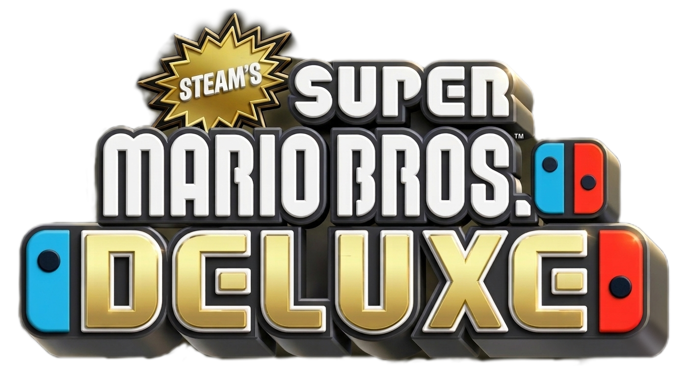

Static preview of the draft content and shared CSS. Spacing and colors are representative; the live Miraheze skin may render differently.
Main Page
Find an orientation to the tools, project resources, and responsible modding practices.
Read about the project, release notes, and official updates.
Share sourced observations and creator knowledge.
Featured project
A community mod project exploring original ideas for New Super Mario Bros. U Deluxe. Follow development as the team builds new content, tests ideas, and expands what creators can do with the game.

vBeta0.50a · 5 levelsYaz0moto
Yaz0moto is a community level editor associated with Steam's New Super Mario Bros. Deluxe modding project. The project website describes it as a tool for building and shaping custom stages.
What it is used for
The project presents Yaz0moto as a way to explore level layouts and develop original course ideas. For supported features, requirements, setup, and current compatibility, consult the upstream repository and its documentation.
Getting help
Use the repository's issue tracker and documentation for tool-specific help. When sharing a tip, include the tool version, game version, reproduction steps, and a source where possible.